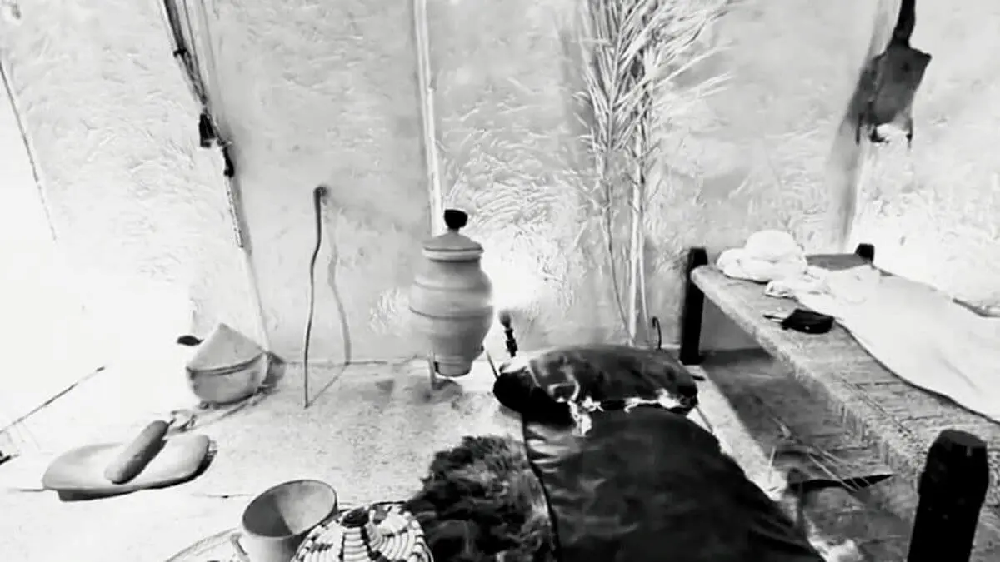
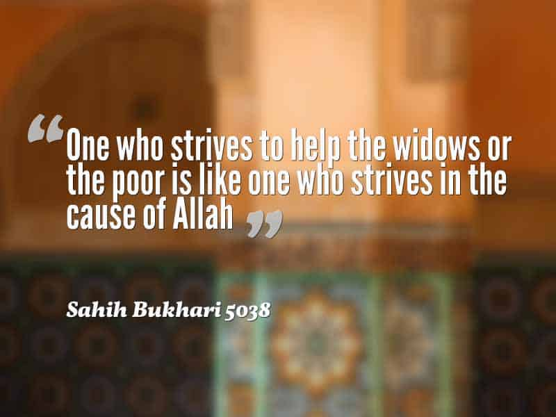

Quranic Verses on Poverty
وَفِي أَمْوَالِهِمْ حَقٌّ لِلسَّائِلِ وَالْمَحْرُومِ
"And in their wealth, there was a right for the beggar and the deprived."
Surah Adh-Dhariyat, 51:19
وَآتِ ذَا الْقُرْبَىٰ حَقَّهُ وَالْمِسْكِينَ وَابْنَ السَّبِيلِ
"And give the relative his right, and [also] the poor and the traveler."
Surah Al-Isra, 17:26

Hadith on Poverty and Charity
"The Prophet (ﷺ) said: 'The one who looks after a widow or a poor person is like a Mujahid (warrior) who fights for Allah's Cause, or like him who performs prayers all the night and fasts all the day.'"
Sahih al-Bukhari 6007
"The Prophet (ﷺ) said: 'The best charity is that which is practiced by a wealthy person. And start giving first to your dependents.'"
Sahih al-Bukhari 1426

The Importance of Helping the Poor
In Islamic teachings, helping the poor and needy is not just an act of charity but a fundamental obligation. The Quran and Hadith repeatedly emphasize the importance of supporting those in need, considering it a means of purifying one's wealth and achieving spiritual elevation.
Islam promotes a balanced approach to wealth distribution through various mechanisms such as:
- Zakat (mandatory charity)
- Sadaqah (voluntary charity)
- Supporting orphans and widows
- Helping travelers in need